Layout flags built OFF, each rendered where it changes stitches beside the professional's file for the same job (hat preset at the pro's width). 40 px/mm: a 0.4 mm thread is 16 px. The flips are Kent's.
fill_turn_slant (PR #1036) · hotel_fremont_hat at 92.5 mm · engine c9dc59dc
⚠ PR #1036 was RED on CI when rendered (tests/test_cut_every_jump.py test_off_is_byte_identical_to_base[earlier-0], an OFF md5 pin stale after main moved); rendered from its branch, diffed against that branch's own OFF.
stitches under 0.5 mm. 3,140 needle points differ, 489 in this 18 x 11 mm crop at [-46.6, -4.2, -28.6, 6.8] mm (plan frame). Sets {"fill_turn_slant": true}.
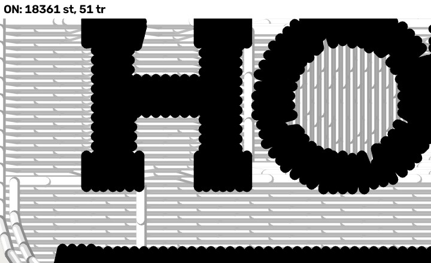
fill_turn_slant (PR #1036) · becker_hat_small at 76.5 mm · engine c9dc59dc
⚠ PR #1036 was RED on CI when rendered (tests/test_cut_every_jump.py test_off_is_byte_identical_to_base[earlier-0], an OFF md5 pin stale after main moved); rendered from its branch, diffed against that branch's own OFF.
stitches under 0.5 mm. 69 needle points differ, 69 in this 18 x 11 mm crop at [-30.0, -15.3, -12.0, -4.3] mm (plan frame). Sets {"fill_turn_slant": true}.
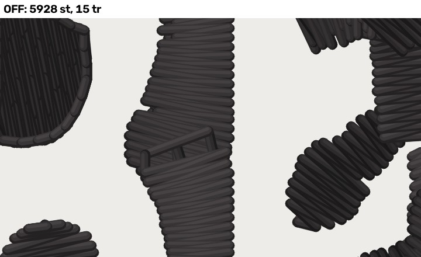
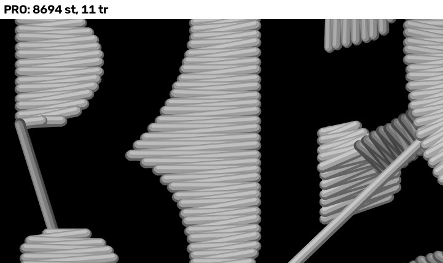
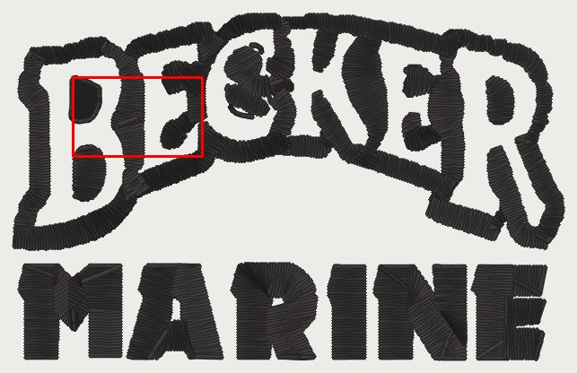
fill_turn_slant (PR #1036) · mfab_hat at 104.9 mm · engine c9dc59dc
⚠ PR #1036 was RED on CI when rendered (tests/test_cut_every_jump.py test_off_is_byte_identical_to_base[earlier-0], an OFF md5 pin stale after main moved); rendered from its branch, diffed against that branch's own OFF.
stitches under 0.5 mm. 245 needle points differ, 206 in this 18 x 11 mm crop at [-13.7, -14.9, 4.3, -3.9] mm (plan frame). Sets {"fill_turn_slant": true}.
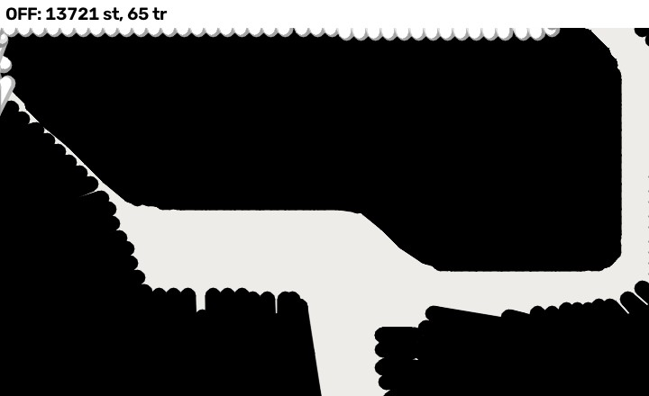
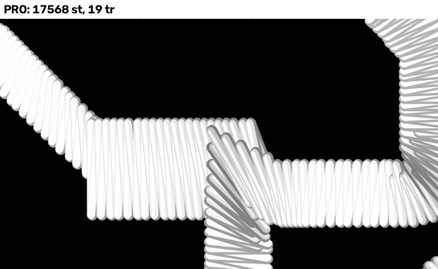
fill_underlay_cross (PR #1033) · hotel_fremont_hat at 92.5 mm · engine d4d9482d
underlay read under each fill (verdict: fills). 2,737 needle points differ, 258 in this 18 x 11 mm crop at [-11.0, -13.2, 7.0, -2.2] mm (plan frame). Sets {"fill_underlay_cross": true}.
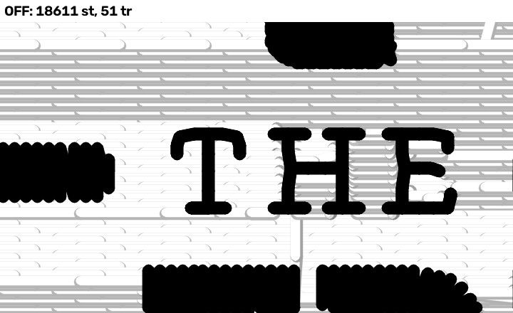
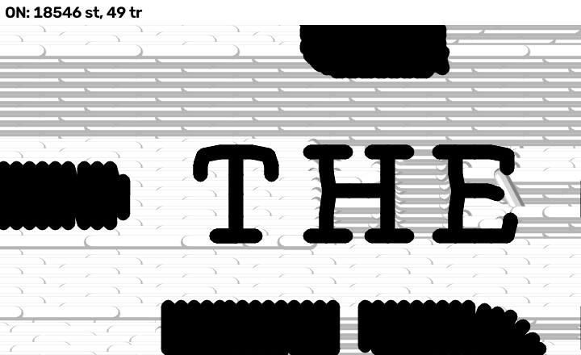
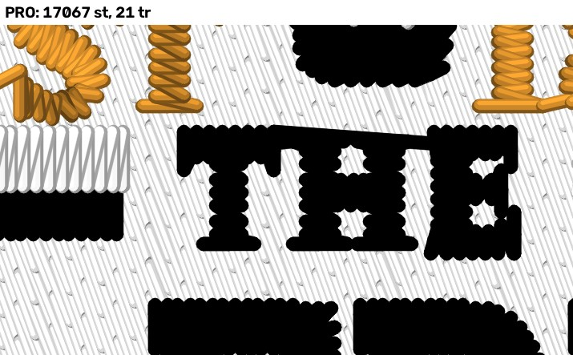
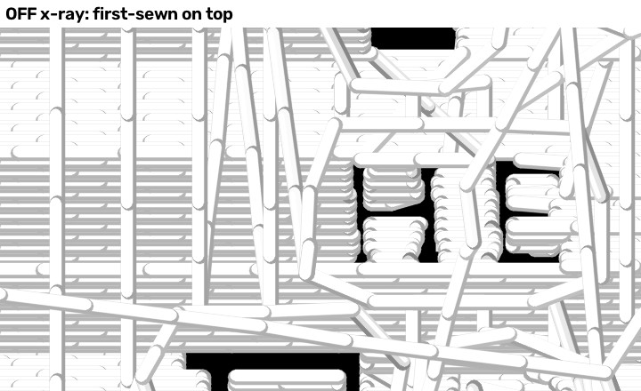
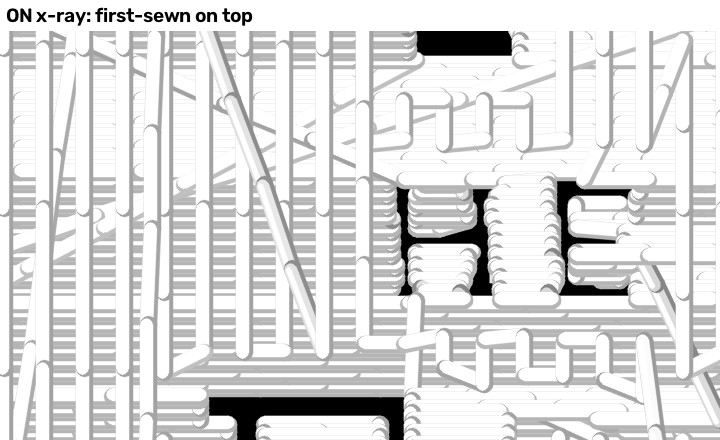
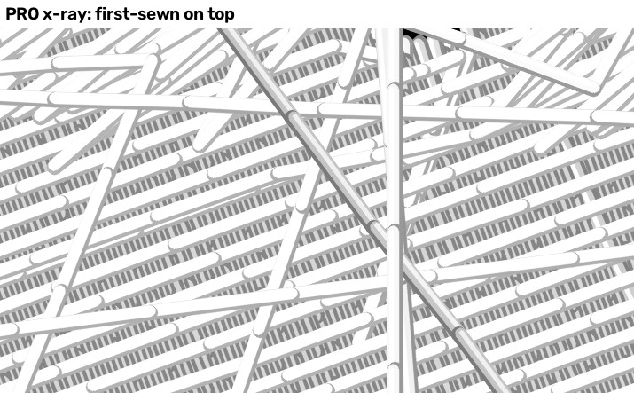
fill_underlay_cross (PR #1033) · becker_hat_small at 76.5 mm · engine d4d9482d
underlay read under each fill (verdict: fills). 26 needle points differ, 26 in this 18 x 11 mm crop at [-29.2, -14.0, -11.2, -3.0] mm (plan frame). Sets {"fill_underlay_cross": true}.
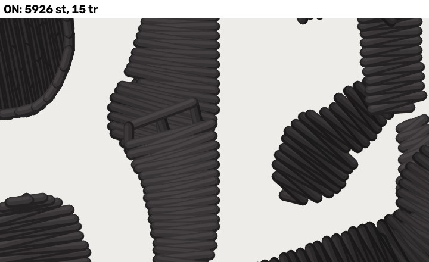
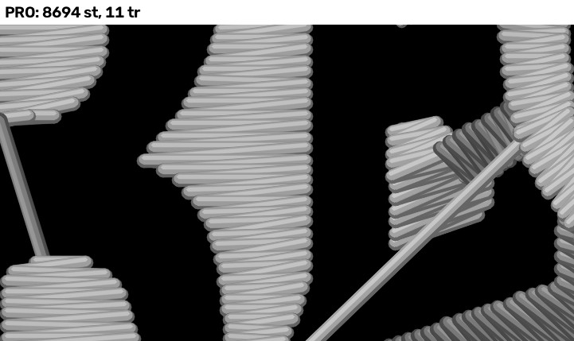
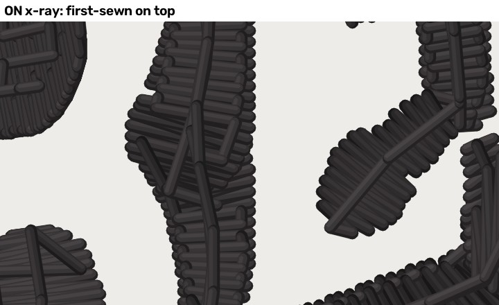
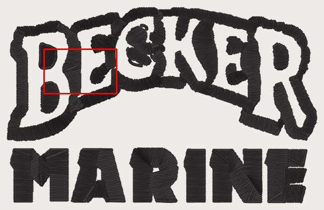
fill_underlay_cross (PR #1033) · mfab_hat at 104.9 mm · engine d4d9482d
underlay read under each fill (verdict: fills). 104 needle points differ, 89 in this 18 x 11 mm crop at [-13.4, -13.9, 4.6, -2.9] mm (plan frame). Sets {"fill_underlay_cross": true}.
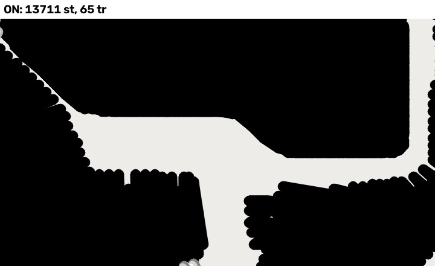
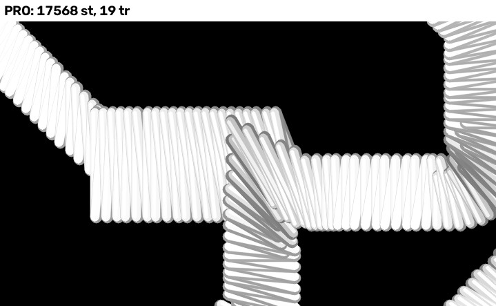
cut_every_jump (PR #1035) · hotel_fremont_hat at 92.5 mm · engine 444270ca
⚠ PR #1035 was RED on CI when rendered (the same OFF md5 pin as #1036); rendered from its branch, diffed against that branch's own OFF.
uncut jumps. 1,207 needle points differ, 218 in this 18 x 11 mm crop at [-13.4, 10.0, 4.6, 21.0] mm (plan frame). Sets {"cut_every_jump": true}.
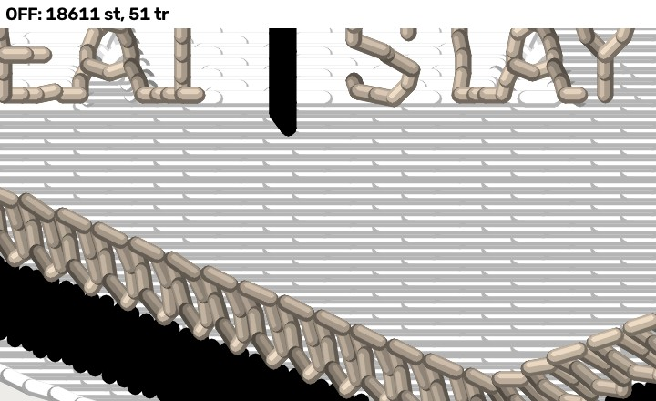
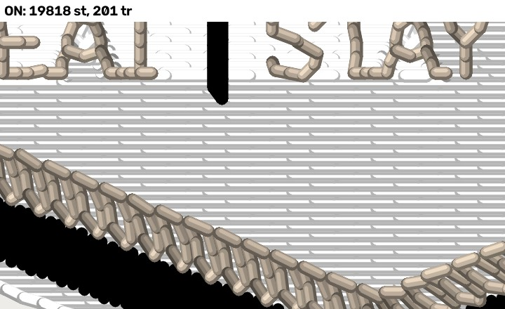
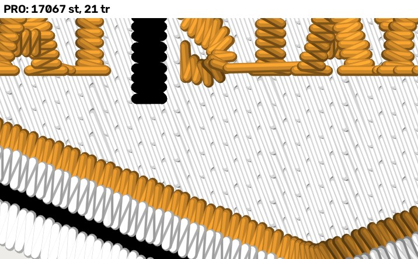
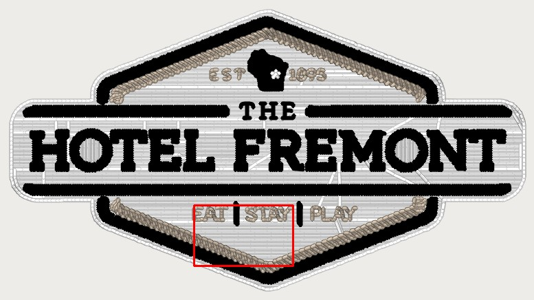
cut_every_jump (PR #1035) · becker_hat_small at 76.5 mm · engine 444270ca
⚠ PR #1035 was RED on CI when rendered (the same OFF md5 pin as #1036); rendered from its branch, diffed against that branch's own OFF.
uncut jumps. 8 needle points differ, 8 in this 18 x 11 mm crop at [-24.1, 23.4, -6.1, 34.4] mm (plan frame). Sets {"cut_every_jump": true}.
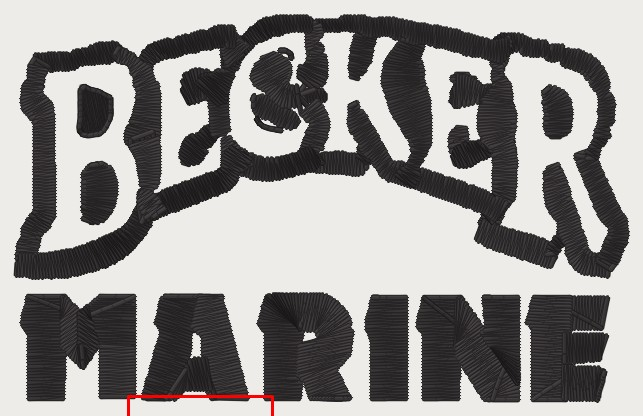
cut_every_jump (PR #1035) · mfab_hat at 104.9 mm · engine 444270ca
⚠ PR #1035 was RED on CI when rendered (the same OFF md5 pin as #1036); rendered from its branch, diffed against that branch's own OFF.
uncut jumps. 248 needle points differ, 72 in this 18 x 11 mm crop at [-5.4, 0.5, 12.6, 11.5] mm (plan frame). Sets {"cut_every_jump": true}.
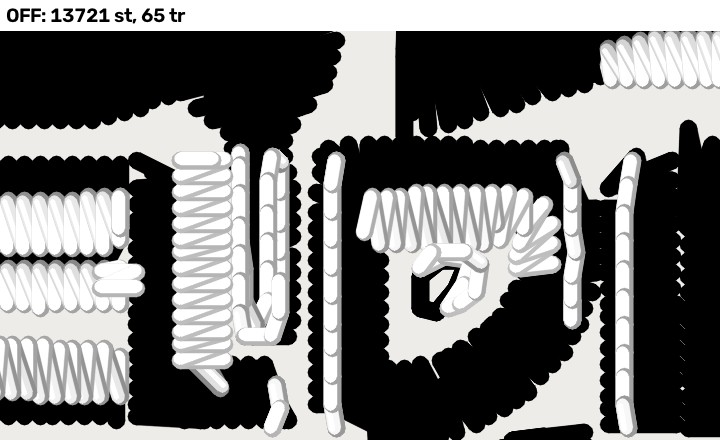
sew_enclosed_white (PR #1031) · hotel_fremont_hat at 92.5 mm · engine d4d9482d
No change on this fixture (byte-identical DST).
sew_enclosed_white (PR #1031) · becker_hat_small at 76.5 mm · engine d4d9482d
stitches in white thread. 8,476 needle points differ, 1,215 in this 18 x 11 mm crop at [-14.1, -15.1, 3.9, -4.1] mm (plan frame). Sets {"sew_enclosed_white": true}.
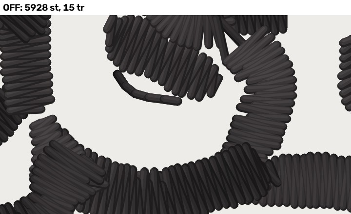
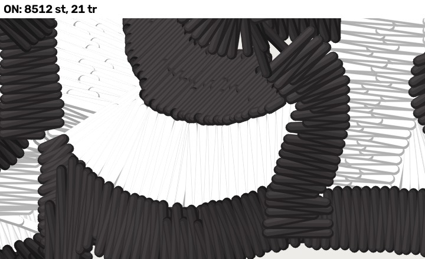
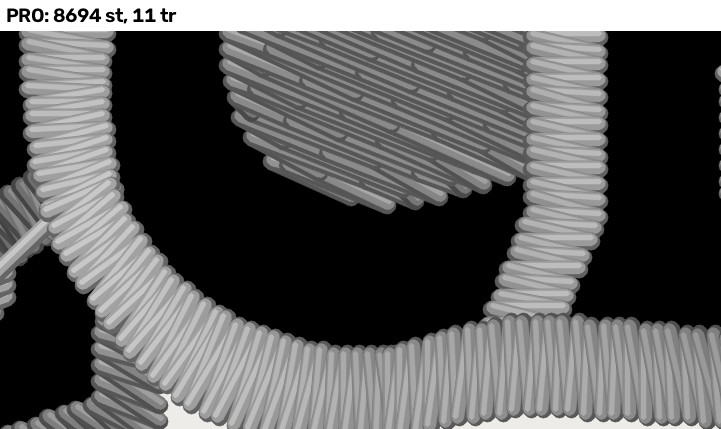
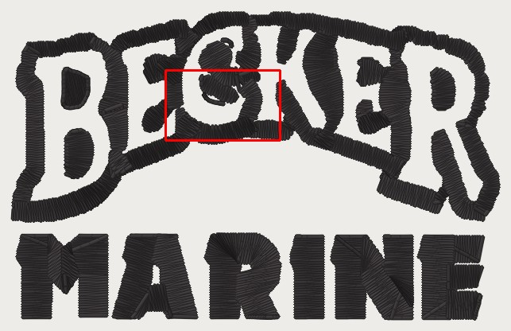
sew_enclosed_white (PR #1031) · mfab_hat at 104.9 mm · engine d4d9482d
stitches in white thread. 24,021 needle points differ, 2,236 in this 18 x 11 mm crop at [12.2, 2.8, 30.2, 13.8] mm (plan frame). Sets {"sew_enclosed_white": true}.
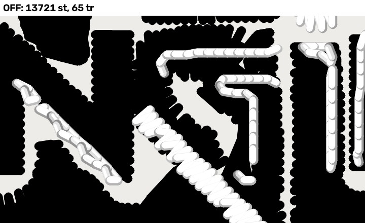
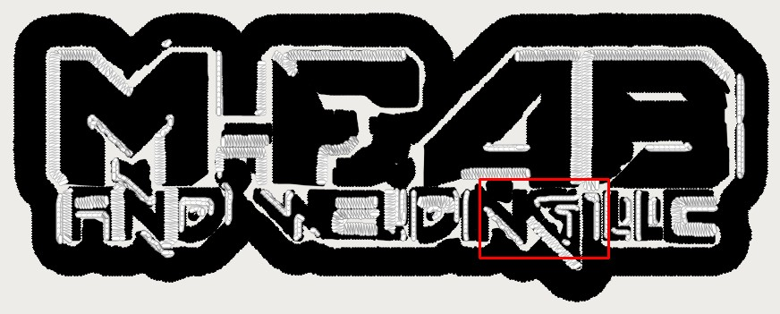
trim_bury_under_later (PR #1030) · hotel_fremont_hat at 92.5 mm · engine d4d9482d
trims whose hop later thread covers. 185 needle points differ, 52 in this 18 x 11 mm crop at [-6.8, -11.5, 11.2, -0.5] mm (plan frame). Sets {"trim_bury_under_later": true}.
trim_bury_under_later (PR #1030) · becker_hat_small at 76.5 mm · engine d4d9482d
No change on this fixture (byte-identical DST).
trim_bury_under_later (PR #1030) · mfab_hat at 104.9 mm · engine d4d9482d
trims whose hop later thread covers. 40 needle points differ, 22 in this 18 x 11 mm crop at [-37.4, 3.0, -19.4, 14.0] mm (plan frame). Sets {"trim_bury_under_later": true}.
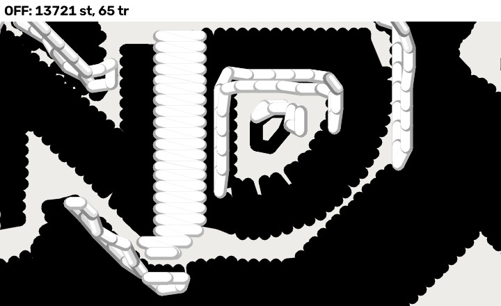
compact_solids_satin (PR #1040) · hotel_fremont_hat at 92.5 mm · engine d4d9482d
edge-cap rings (plan roles). 110 needle points differ, 110 in this 18 x 11 mm crop at [1.3, -3.3, 19.3, 7.7] mm (plan frame). Sets {"compact_solids_satin": true}.
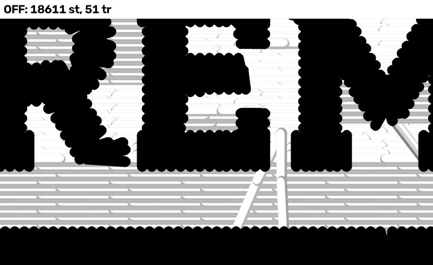
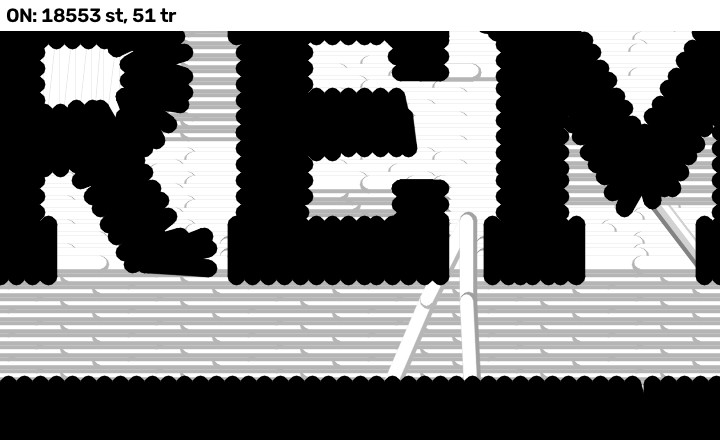
compact_solids_satin (PR #1040) · becker_hat_small at 76.5 mm · engine d4d9482d
No change on this fixture (byte-identical DST).
compact_solids_satin (PR #1040) · mfab_hat at 104.9 mm · engine d4d9482d
No change on this fixture (byte-identical DST).
small_solids_satin (PR #1023) · hotel_fremont_hat at 92.5 mm · engine d4d9482d
edge-cap rings (plan roles). 1,527 needle points differ, 527 in this 18 x 11 mm crop at [4.5, 9.8, 22.5, 20.8] mm (plan frame). Sets {"small_solids_satin": true}.
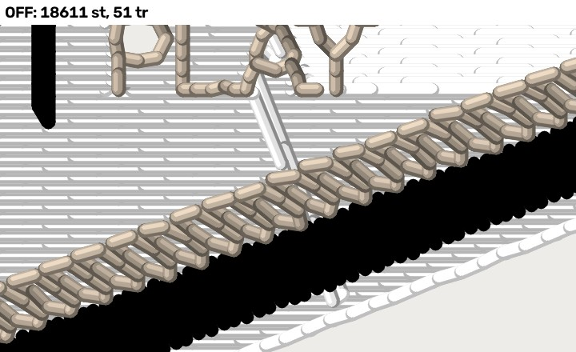
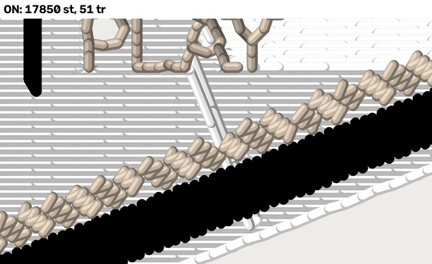
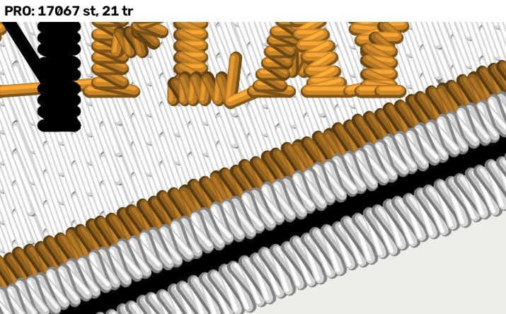
small_solids_satin (PR #1023) · becker_hat_small at 76.5 mm · engine d4d9482d
No change on this fixture (byte-identical DST).
small_solids_satin (PR #1023) · mfab_hat at 104.9 mm · engine d4d9482d
edge-cap rings (plan roles). 190 needle points differ, 108 in this 18 x 11 mm crop at [19.8, 5.6, 37.8, 16.6] mm (plan frame). Sets {"small_solids_satin": true}.
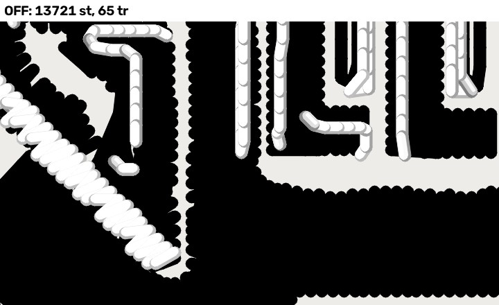
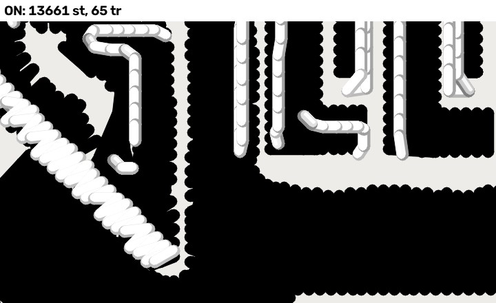
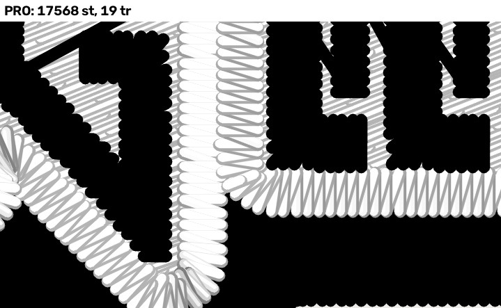
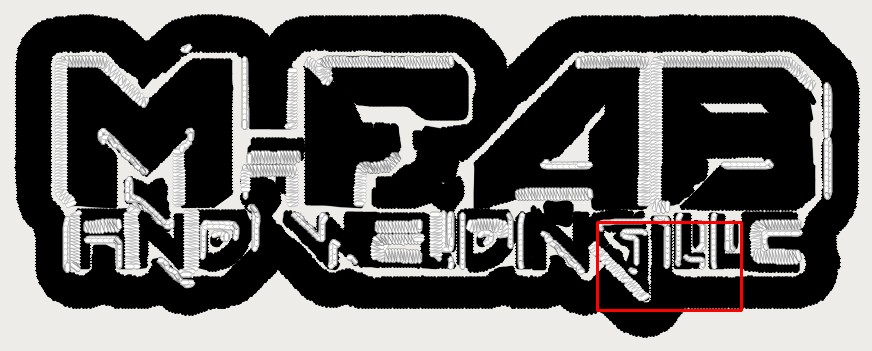
tie_in_off (PR #1042) · hotel_fremont_hat at 92.5 mm · engine ace14f08
run starts that lock. 220 needle points differ, 44 in this 18 x 11 mm crop at [-16.1, 2.5, 1.9, 13.5] mm (plan frame). Sets {"tie_in_off": true}.
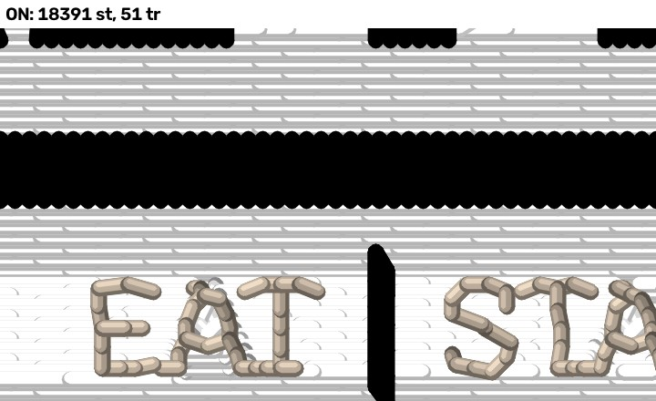
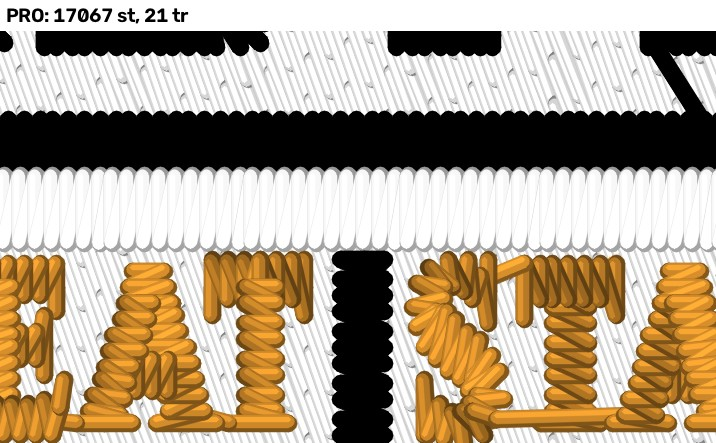
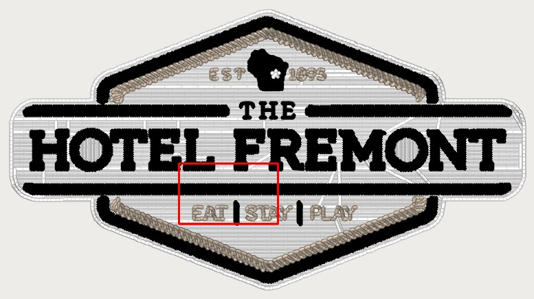
tie_in_off (PR #1042) · becker_hat_small at 76.5 mm · engine ace14f08
run starts that lock. 64 needle points differ, 16 in this 18 x 11 mm crop at [-17.4, -20.7, 0.6, -9.7] mm (plan frame). Sets {"tie_in_off": true}.
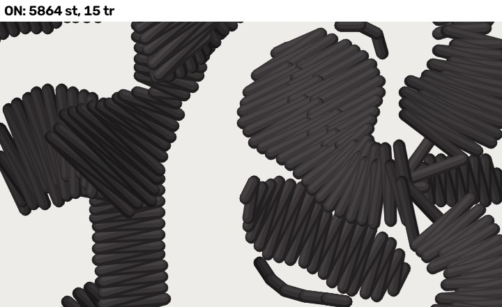
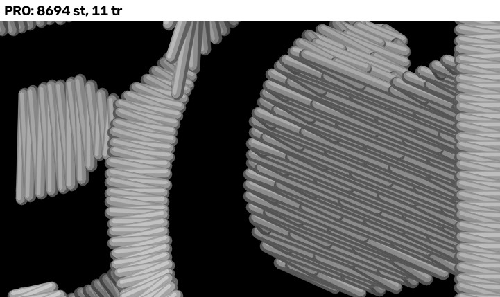
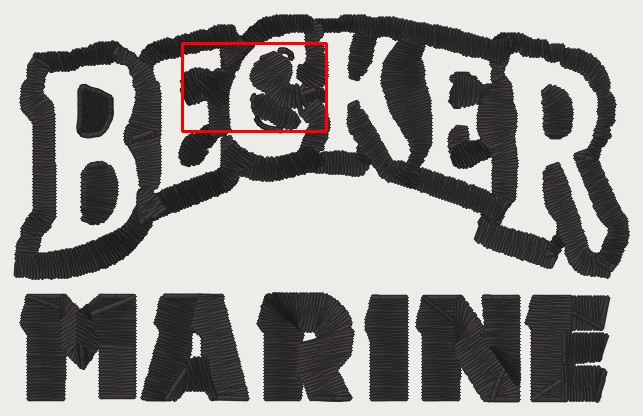
tie_in_off (PR #1042) · mfab_hat at 104.9 mm · engine ace14f08
run starts that lock. 272 needle points differ, 52 in this 18 x 11 mm crop at [-39.0, 2.6, -21.0, 13.6] mm (plan frame). Sets {"tie_in_off": true}.
satin_underlay_short_columns (PR #1044) · hotel_fremont_hat at 92.5 mm · engine 674f7bcf
satin columns under 5 mm sewn bare. 44 needle points differ, 13 in this 18 x 11 mm crop at [-42.7, -3.3, -24.7, 7.7] mm (plan frame). Sets {"satin_underlay_short_columns": true}.
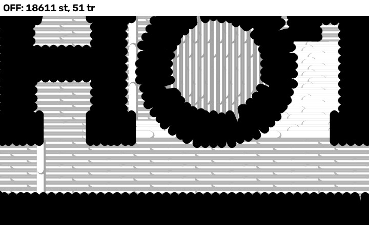
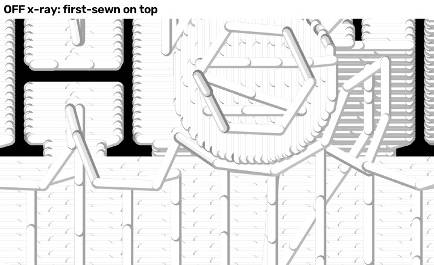
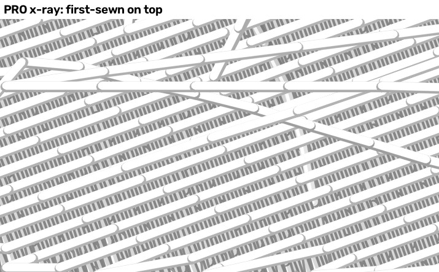
satin_underlay_short_columns (PR #1044) · becker_hat_small at 76.5 mm · engine 674f7bcf
satin columns under 5 mm sewn bare. 10 needle points differ, 6 in this 18 x 11 mm crop at [-22.4, -22.1, -4.4, -11.1] mm (plan frame). Sets {"satin_underlay_short_columns": true}.
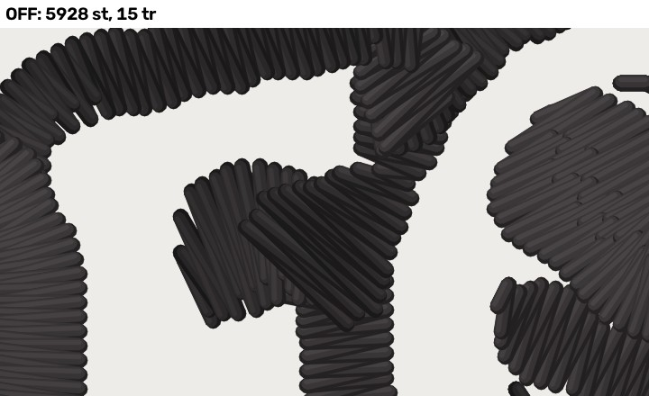
satin_underlay_short_columns (PR #1044) · mfab_hat at 104.9 mm · engine 674f7bcf
satin columns under 5 mm sewn bare. 356 needle points differ, 107 in this 18 x 11 mm crop at [-47.2, 2.6, -29.2, 13.6] mm (plan frame). Sets {"satin_underlay_short_columns": true}.
small_text_set (PR #1029) · hotel_fremont_hat at 92.5 mm · engine d4d9482d
median small-letter height, mm. 5,244 needle points differ, 1,075 in this 18 x 11 mm crop at [-7.6, -15.3, 10.4, -4.3] mm (plan frame). Sets {"small_text_cap_mm": 4.0, "small_text_cap_max_width_scale": 1.05, "small_text_cap_min_stroke_mm": 0.85, "small_text_cap_letter_gap_mm": 0.25, "small_text_cap_bold_scale": 1.45, "lettering_columns_small_bold": true}.
small_text_set (PR #1029) · becker_hat_small at 76.5 mm · engine d4d9482d
No change on this fixture (byte-identical DST).
small_text_set (PR #1029) · mfab_hat at 104.9 mm · engine d4d9482d
No change on this fixture (byte-identical DST).